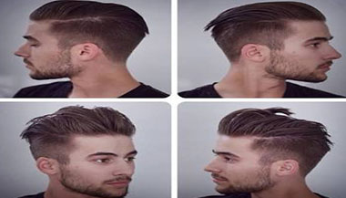
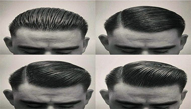

HAIR CUT CUSTOM
-

UNDERCUT STYLE
Jenis ini memotong tipis bagian samping rambut pria, dan di bagian atasnya di biarkan lebih lebat dan dominan dan hanya cukup dirapihkan saja, banyak pria yang menyukai style ini karena membuat lebih rapih, casual dan juga tampan
MORE -

SLICK BACK STYLE
Jenis ini membuat rambut pada bagian depan disisir atau ditata menjadi kebelakang, namun dalam style ini harus menggunakan pomade untuk menatanya, style ini juga banyak diminati para pria agar terlihal lebih klimis dan juga classy
MORE